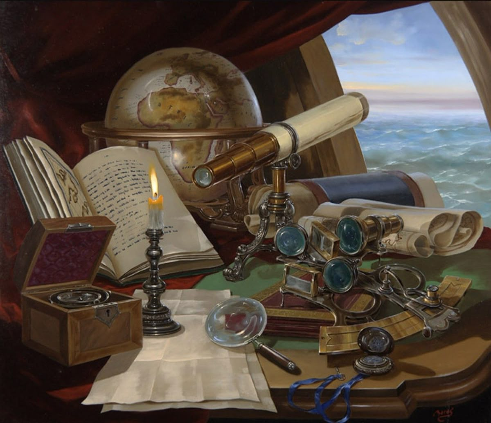

Culture of Elder
The culture of Elder range from city to country but there are some core
philosophy that is the same through out the country.
Country Beliefs
Majority belices in the power of recording history to learn from. The
reason for this belief is that so they country will not repeat simple
mistakes and all pattern to the rise and fall of empires. They want to
maintain their power on the world level for as long as possible.

What shaped this culture?
This belief was shaped by the two events of the decay of their world
empire. The empire fell two times and on the third attempt made them
realize that it may not be the best idea to maintain the power for long.

Cooking in Daily Life